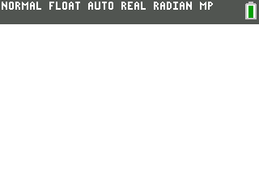
Hexes is a hex editor utility for the TI-84 Plus CE and TI-83 Premium CE calculators and their derivatives, designed to be pleasant and friendly, providing a clean interface for viewing and editing files precisely directly on your calculator.
This is a C rewrite of my 'old' hex editor of the same name, which was written in the ICE programming language. It was buggy, hard to use, and overall just not something I would personally use as a hex editor. So, I decided to finally rewrite this in C. Enjoy! :)
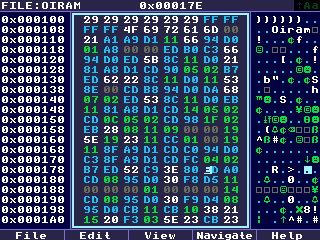
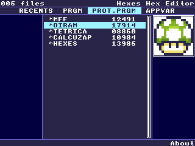
Woo! The C rewrite is finally released! This is the fruit of 4 months of work, and I am very proud of it. Of course, I have plans for many features to be added in the future, so this is merely the beginning.
This is the menu that is shown to you upon opening Hexes.
Controls:
This is the real meat of the program, where hex editing happens (duh)
Controls:
When the middle pane is selected, you can use the number keys [0]-[9] along with [math], [apps], [prgm], [x-1], [sin], and [cos] (for A, B, C, D, E, and F respectively) to type hex digits at the cursor location.
When the right pane is selected, you can use the keyboard to type regular ASCII characters. Use modifiers like [2nd], [alpha], and [XTθn].
By default, modifiers are set to be sticky, however, that can be changed from the customization/configuration menu. Also by default, pressing alpha toggles between uppercase and lowercase (only when the modifier option mentioned in the line above is set to Toggle or Toggle Lock) This can be disabled, making [alpha] toggle uppercase and [XTθn] toggle lowercase.
This feature can be used by other programs and shells by writing specific data to the `Ans` variable then launching Hexes. This skips the file selection screen and immediately shows the editor open for the file set in `Ans`.
Headless start is a feature borrowed from HexaEdit (by Captain Calc), another hex editor for the TI-84 Plus CE, and Hexes uses the exact same format HexaEdit uses, for compatibility purposes. See the HexaEdit README for the specifications of this format.
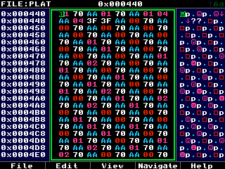
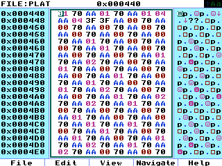
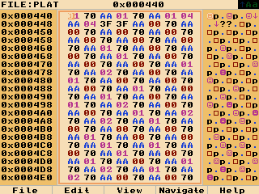
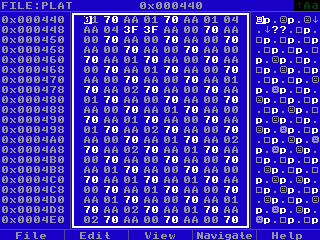
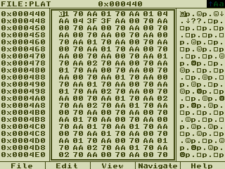
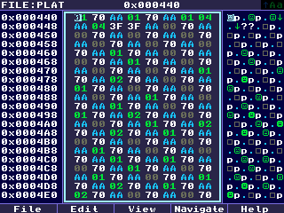
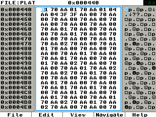
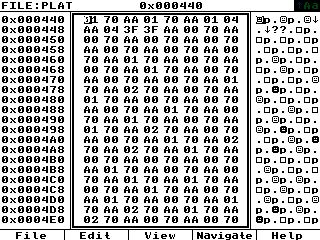
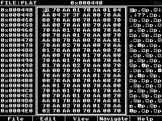